Low friction FAIR interoperability using RO-Crate metadata in text analytics pipelines
2025-10-23
Copyright Rosanna Smith, Mike Lynch, Peter Sefton, Simon Musgrave, River Tae Smith 2025 Creative Commons Attribution-Share Alike 4.0 International.
This presentation is from the eResearch Australasia Conference. It was delivered by Rosanna Smith and Michael Lynch. I'm putting it here as one of the authors.
We followed this presentation with an RO-Crate Birds of a Feather session with some other colleagues. We were able to help out a few RO-Crate commiunity memebers with some of their questions, and direct them towards solutions and avenues for further discussion - mainly the RO-Crate Regional Drop in Calls.
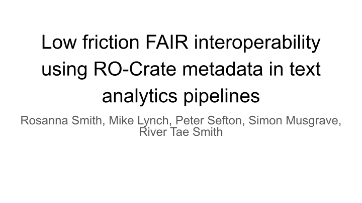
Research Object Crate (RO-Crate) is a simple method for linked-data description and packaging of data. Since 2021, the Language Data Commons of Australia (LDaCA) project has onboarded a number of language data collections with thousands of files. These are all consistently described as RO-Crates using a human and machine-readable Metadata Profile, discoverable through an online portal, and available via an access-controlled API. This presentation will show how analytics workflows can be connected to data in the LDaCA repository and use linked data descriptions, such as the W3C “CSV for the web” (CSVW) standard, to automatically detect and load the right data for analytical workflows. We will show how the general-purpose flexible linked metadata and raw data is prepared for use with common tools implemented in Jupyter notebooks. This work, funded by the Australian Research Data Commons ARDC, has enabled novel research by making data collected using sub-disciplinary norms of linguistics available to researchers working in other specialised areas – we will show examples of this and how this approach is relevant to other HASS and STEM disciplines, demonstrating work which would not have been possible without this co-investment between the Language Data Commons partners and ARDC The presentation should be accessible to the broad audience of eResearch and be of particular relevance to those with an interest in workflows and analytics, as well as metadata, vocabulary and repository specialists. It shows a FAIR research system which runs on open specifications and code and can be redeployed for other domains.
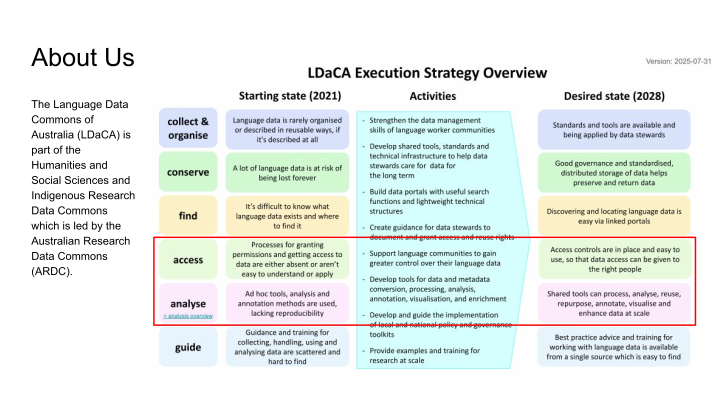
The Language Data Commons of Australia or LDaCA is part of the Humanities and Social Sciences and Indigenous Research Data Commons, which is led by the ARDC.
This project is co-funded by the University of Queensland (UQ). Authors Rosanna, Peter, Simon and River all work with UQ and Mike is with the University of Sydney.
What you see on the right is the execution strategy and what drives the LDaCA tech team.
To summarise, the strategy is about data management, developing tools and standards, technical architecture, and care for data in the long term.
LDaCA builds data portals with robust access controls in place, and this ensures that access is as open as possible but as restricted as needed according to the data stewards and communities the collections relate to.
We also develop shared tools for processing, analysis and visualisation of data and metadata, some of which we’ll be demonstrating today. We will be focussing on the indicated parts of this strategy “access” and “analyse”.
![Activities :: Analytical workflows are typically not published, re-runnable or reusable :: transparent :: adaptable :: Methods are specialized to particular studies or research cohorts :: There are many analytical tools available but they require different input formats :: There are readily accessible, self documenting connectors making it easy to apply analytical methods :: documented :: (Meta)Data formats, tools, research workflows are varied, and under-documented :: connected :: Researchers can use tools and processes to publish, find, (re)use and adapt computational methods to new contexts :: Key methods and workflows are adaptable to work in different research contexts with documentation of their uses and limitations :: Documentation and training programs available to help researchers adopt appropriate standards :: LDaCA Analyse - Strategic Overview :: findable :: Document, demonstrate and teach methods for publishing findable, (re)usable and readable research code :: Train researchers in data management, standardised data formats, preparation, transformation and wrangling of data for analysis :: Document methods and develop toolkits to transform BYO (meta)data to standard formats without compromising data integrity :: Train researchers in computational methods application and development :: Develop guidance and train researchers on how to choose appropriate analytical approaches eg ethical and appropriate use of AI - raise awareness of computational methods :: Identify promising methods, practices and workflows, including emerging methods (AI) and adapt them across research contexts ethically and appropriately :: Develop data connections that link Language Data Commons compliant data - in portal and BYO - to analytical tools :: Develop and demonstrate end-to-end best-practice workflows to connect researchers, data and computational tools :: LDaCA infrastructure is interconnected, with suitable interfaces, data formats and guidance on :: appropriate usage :: Appropriate implementations of analytical methods are hard to find :: Version: 2025-07-31 :: contextually appropriate :: It is unclear when and how methods can and should be (re)used in different research contexts :: Researchers are more aware of computational methods, and can use LDaCA guidance to match appropriate methods to their and others’ data. :: Starting state (2021) :: Desired state (2028) :: Activities :: :: :: ::](Slide02.svg "Slide: 2")
Looking at analytics specifically, LDaCA aims to ensure workflows and infrastructure developed for analysing collections are available for access and reuse.
These should also be easy to re-run with clear documentation on their uses and limitations, and should allow for adaptation for a range of contexts.
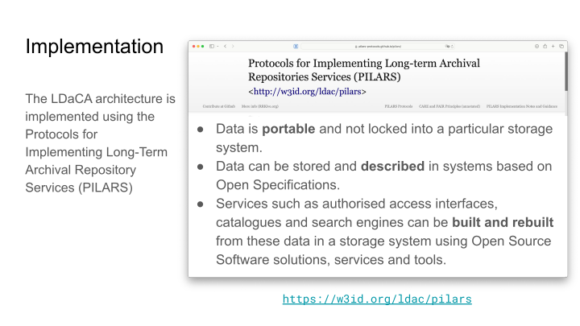
The core idea of LDaCA is to develop standardised methods for describing and organising data in a Data Commons environment, which reduces friction in finding, using and re-using data.
We have captured this approach with PILARS, which are Protocols for Implementing Long-Term Archival Repository Services.
These services should be designed to work in low-resource environments, allowing communities to have agency and control over their materials.
The protocols prioritise sustainability, simplicity and standardisation, with linked-data description and clear licensing.

Data is organised into objects, taking into account practical considerations such as the size of each object, and access conditions. Each data object is stored in a repository as an RO-Crate (which stands for Research Object Crate).
An RO-Crate is a way of packaging research data that stores the data together with its associated metadata and other component files, such as the data license.
In this diagram, we have one collection containing items, such as a set of interviews, and each item describes the files linked to it, in this case, a text file and an audio file. Licenses for each of the items are also included.
![Data Annotation :: A Metadata Profile describes how storage objects should be modelled, and how files should be described. https://w3id.org/ldac/profile :: This profile draws on the Language Data Commons Schema – a Schema.org Style set of terms for describing language data in an Archival Repository and for data interchange. https://w3id.org/ldac/terms :: LDaCA uses Research Object Crate (RO-Crate) metadata to describe each storage object. Each OCFL object has an RO-Crate metadata document (ro-crate-metadata.json), making it an RO-Crate. ::](Slide05.svg "Slide: 5")
The RO-Crates are modelled according to a metadata profile which outlines the expected collection structure and provides guidance on describing language data in a repository.
The profile uses schema.org as its foundation for metadata description, as well as a few other standard vocabularies.
It also draws on the Language Data Commons schema http://w3id.org/ldac/terms, which contains metadata terms specific to describing language data.
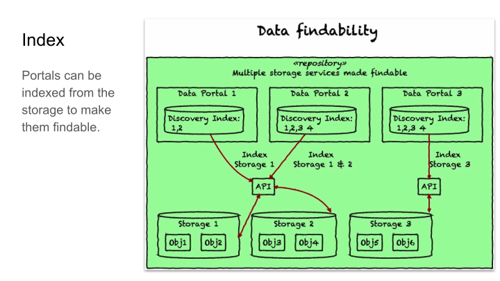
This diagram overviews the architecture for indexing data with a focus on findability, and illustrates the key conceptual components of our data storage architecture.
Storage services follow the PILARS protocols and store data as a series of Storage Objects using the Oxford Common File Layout (OCFL). This is a specification from the digital library community for storing data independently of applications such as portals, repositories or particular analytical pipelines.
This data is distributed across multiple storage services, including file-systems and object stores hosted by different institutions.
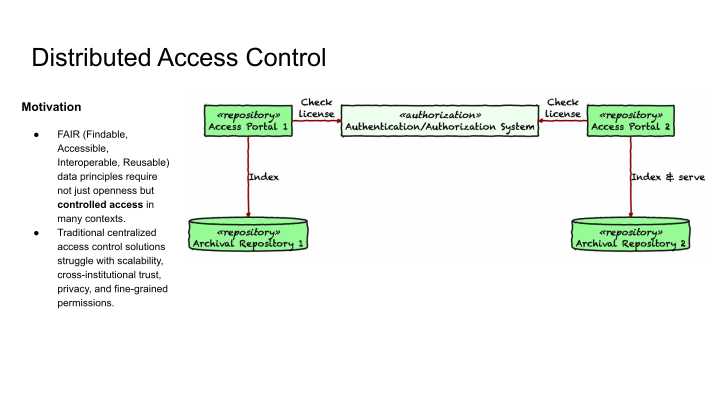
The diagram shows our distributed access control approach at LDaCA, and this is motivated by a need for controlled access in conjunction with CARE and FAIR data principles.
Each item in the repository is stored as an RO-Crate with licensing information included, and the repository defers access decisions to an external authentication and authorization system.
Here, data custodians can design whatever process they like for granting license access, ranging from simple click-through licenses to detailed multi-step workflows based on whatever criteria the rights holder requires.
This can be scaled to multiple portals and repositories as well.
(Image is from here: https://github.com/Language-Research-Technology/plantuml-diagrams/blob/main/generic/simple-distributed-access-control.svg)
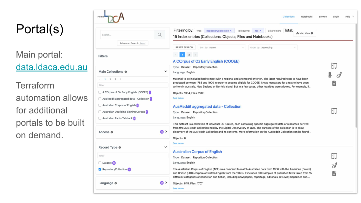
All of this architecture comes together in the “main” portal, where we add language data collections that meet LDaCA’s collection guidelines. These are batch loaded from scripts into a loading area and then they’re indexed appropriately.
We’ve also set up automation with Terraform to build portals on demand for communities, so that bespoke requirements for the portal interface and other needs can be catered to.
The portals provide secure access to the data in an automated way through an API, and this is also used for downloads and analytics.
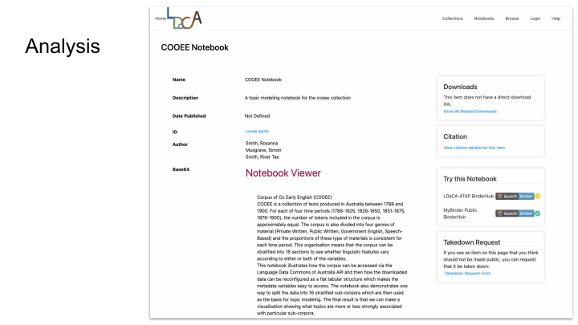
On the analytics side, we’re building Jupyter notebooks to explore the collections, which users can launch in a binder infrastructure, and these are also accessible in the portal.
The notebooks allow you to download the collection data and analyse its contents in a repeatable way with reproducible results.
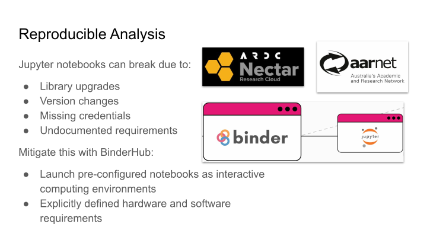
Library upgrades and version changes can break once-working Jupyter Notebooks, and this makes it difficult for future users to verify and reproduce results or build on them.
BinderHubs enhances reproducibility by allowing users to launch pre-configured notebooks as interactive computing environments, and these have explicitly defined hardware and software requirements.
We use the Nectar BinderHub service that is provided by the ARDC and AARNet.
To illustrate this, I’ll walk through a recent notebook that has been developed for the COOEE collection.
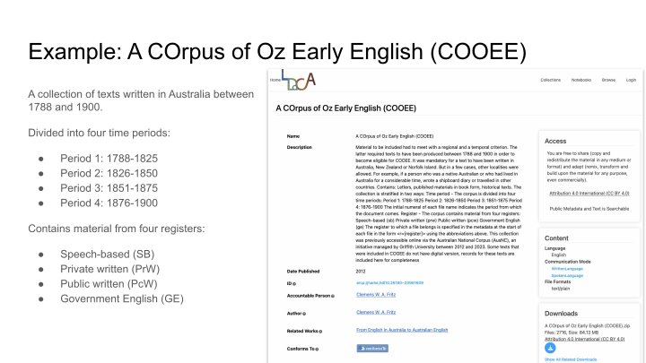
The COrpus of Oz Early English, or COOEE, is a collection of texts written in Australia between 1788 and 1900. These include letters, published materials in book form, and other historical text.
The corpus is divided into four time periods, each holding about 500,000 words.
It’s also divided into four registers: these are Speech-based, Private Written, Public Written and Government English. The proportions of these registers is consistent for each time period as well.
![COOEE Notebook - Metadata Standardisation :: Stratifying COOEE across time period and register makes 16 sub-corpora, allowing for comparative analysis such as topic modeling. :: Metadata standardisation required to reduce friction, increase interoperability: :: Mapping of collection-specific terms to schema.org standard: :: Birth → birthDate :: Gender → gender :: Nr → identifier :: Identifying the main text of the collection for analysis with the Language Data Commons Schema term ldac:mainText, e.g. :: "ldac:mainText": { :: "@id": "data/1-001-plain.txt" :: } ::](Slide12.svg "Slide: 12")
Because COOEE is organised across both time period and register, the corpus can be stratified into 16 sub-corpora and allows for analysis of linguistic features according to either or both of the variables.
Our notebook uses these sub-corpora as the basis for topic modeling, to show what topics are more or less strongly associated with particular sub-corpora.
Before we could analyse the collection though, there was some transformation of metadata needed, so that where possible, the terms adhere to a standard framework that can be applied across collections, and allow for further interoperability.
A number of these included mapping metadata in the COOEE collection to their schema.org equivalents, for example, Birth to birthDate, and Nr to identifier.
We also needed to identify the main text for analysis, because each object in the COOEE collection has two types of text files - one is the plain text and the other has metadata encoding, with information about the register and the author of the text.
For analysis, we only want to use the plain text so that the metadata codes won’t be included as part of the topic counts.
For this, we defined the new term mainText in the Language Data Commons Schema vocabulary, which identifies the most relevant sub-component for computational text analytics.
This metadata standardisation is an important step because it not only makes analysis faster and easier to do, but also allows us to re-use analytical approaches on multiple collections, and streamlines processes like comparing datasets.
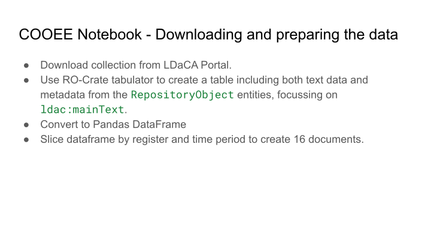
In the notebook, we first download the whole COOEE collection directly from the LDaCA Portal, and then we use the RO-Crate tabulator Python library which converts RO-Crate linked data (a network, or “graph” of relationships) to tabular representations (rows and columns).
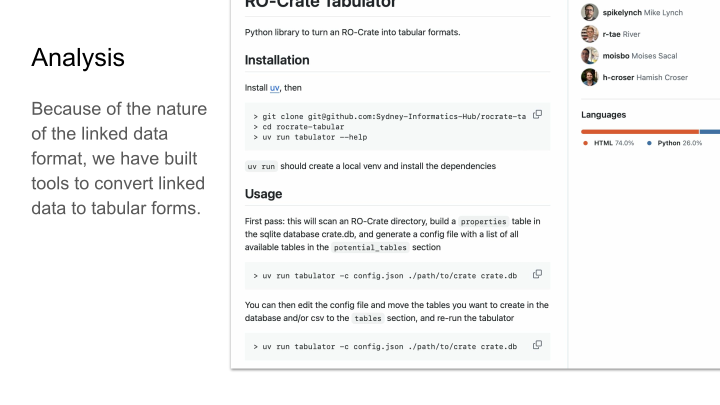
The tabulator also allows you to select the tables and properties that are relevant to your analysis. Mike will talk about this later in more detail.
We also specify the mainText field as the property to be loaded and indexed as the text to analyse for this collection.
We then convert the table to a Pandas DataFrame so that the metadata sits alongside the text data.
Finally, we slice the data by register and time period, and concatenate the text of each document within a slice to create 16 large documents.
![COOEE Notebook - Tokenization :: Natural Language Toolkit (NLTK) :: Documents converted to lists of words :: Removed punctuation marks, numbers, new line symbols and common words (e.g. the, and, of, etc.) :: \nI have not much news since I wrote, except that the weather is now beautiful, and in consequence the gold frenzy has burst forth now in full force, :: 'much', 'consequence', :: 'news', 'gold', :: 'since', 'frenzy', :: 'write', 'burst', :: 'except', 'forth', :: 'weather', 'full', :: 'beautiful', 'force', :: :: ::](Slide15.svg "Slide: 15")
In order to discover the topics in the collection, we need to be working with a list of words for each document instead of paragraphs of text.
For this, we used the Natural Language Toolkit Python libraries, which allow us to tokenise the data.
Some words and other items in the text can be considered as 'noise' for the analysis and these are removed: these include punctuation marks, numbers, artefacts of digital text such as new line symbols and many common function words which are not relevant for the analysis.
The diagram shows an example of some of the input text in the first box, and the second box shows the same data tokenised in a list with punctuation and other ‘noise’ items removed.
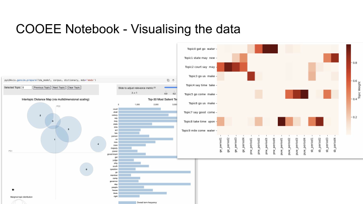
Using the tokenised word lists, we can now model the data using Gensim, and visualise the output, and we’ve done this with both interactive and static options.
LDAvis – on the left – is an interactive visualisation of the topics learned by the model. The circles represent topics, and the most prevalent topics are larger. The bars show individual word frequencies.
Because this visualisation is interactive, users can select a topic circle to view its most salient terms, which can be used to analyse any plausible semantic groupings in those topics.
The heatmap – on the right – shows the distribution of topics across time periods and registers. The horizontal rows of three or four dark squares show where topics are strongly associated with a particular register across time.
Although this particular notebook example is just run on the COOEE data, these processes can be easily re-applied to explore further collections, and can be adjusted according to the needs of the user.
I’ll now hand over to Mike to talk more about the RO-Crate tabulator.
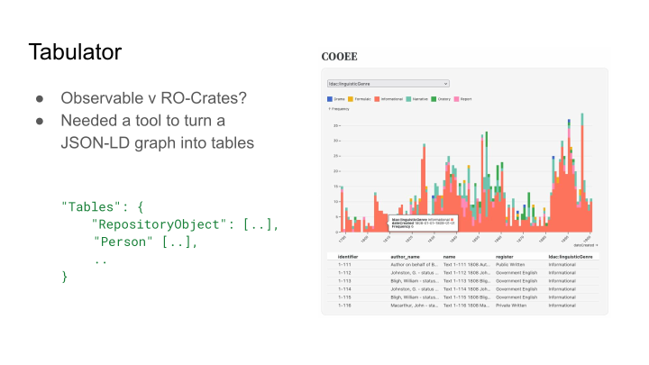
The first version of Tabulator was written because a new version of the Observable data visualisation platform had come out which allowed you to build interactive dashboards without requiring a custom backend.
I wanted to see how quickly I could use it to visualise the contents of an RO-Crate.
Observable is a data-sciency tool so it really wants to work with tables. So Tabulator needed to be able to turn a random RO-Crate, which could be an arbitrary network of entities, into a set of tables.
I'm a software engineer, so the first version was extremely general and not very performant. In most practical cases, you only want to turn a couple of the entities into tables - with the LDaCA collections, for example, things like RepositoryObjects, and also lifting relations to Persons into the table of documents
With a bit of config the Tabulator can be used to convert the COOEE RO-Crate to an SQLite database with a row for each of the documents and their metadata - you can then load it in Observable and start building interactive plots to look at corpus features.

Tables are also how researchers like to work with data, because you can load them into spreadsheets. But that raises the problem of spreadsheets and data types - CSV is just text with commas - there's no type information.
But - we're exporting our data from a well-crafted RO-Crate, which has schema.org mappings, and there's an existing standard, CSVW, which can annotate CSV with JSON-LD column types.
So Tabulator can export CSVs, together with a secondary RO-Crate which provides a CSVW schema for each of the exported tables, explaining what the columns are and providing links to definitions
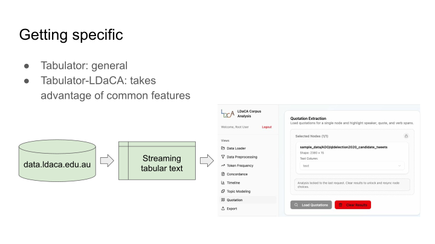
We've got more work underway at Sydney Informatics Hub to make it easier to use the Tabulator on LDaCA corpora. I still want to keep it as a general-purpose library but we can add some Python code which will use the common features of LDaCA RO-Crates to get out the relevant entities and build a table of the texts.
This will then feed into the work we're doing on a new web frontend to a range of different text-analytics tools.
Eventually, rather than downloading a whole corpus, running Tabulator and then loading it, you could run a component which fetches texts from the LDaCA data portal and returns rows which can be analysed in a web interface
General purpose - visualise/analyse in your platform of cj
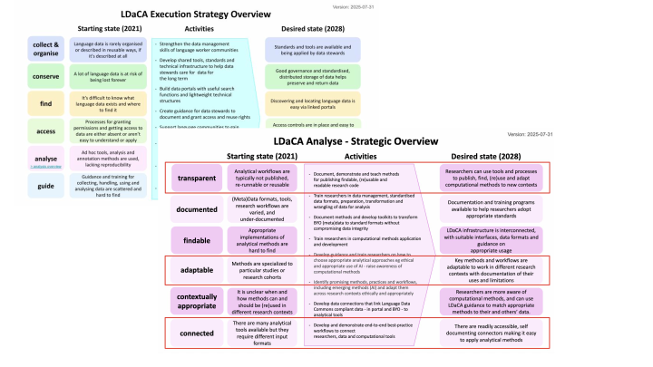
To conclude, this work is part of a Data Commons. The key idea is to create low-friction analysis pipelines by:
- Having consistently described, well managed data available with a discovery portal and secure access APIs
- Data prep tools which will make it possible to align BYO data with the standards
- Tools should be easy to run on more than one data set, datasets work with more than one tool
- Limitations and assumptions on tools are clearly documented
- Tools are adaptable to different contexts